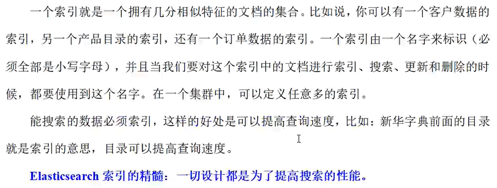

一、核心概念
索引
类型（在最新的版本已经不在支持了）


文档（Document）

字段（Field）

映射（Mapping）

分片（Shards）


副本（Replicas）


分配（Allocation）

二、系统架构

三、分布式集群
单节点集群

默认情况下，索引的分片是一，副本是一。


（一个分片对应一个副本，分片和副本应该在不同的节点（防止数据丢失），在单点情况下，数据和副本在一台机器上，这是不安全的，集群健康值为yellow）
故障转移


(边框粗的是主分片，细的是副本)
水平扩容

再次加入一个节点


注：该索引上的每个分片都有了两个副本。

应对故障
假设上述集群（三个节点）中原先的master节点宕机。

路由计算
在分片中的文档数据，它的插入和查询应该有一个统一的规则。这个规则就是路由计算。（新增文档的时候，增加在哪个分片？）
路由计算：hash(id)%主分片数量

查询文档：（通过路由计算可以直到指定文档在哪个分片，但查询分片还是查询分片的副本呢？）

数据写流程


数据读流程

数据更新流程


多文档操作流程

四、分片原理

倒排索引

分词器：
keyword：
text：
ik_max_word：最粗粒度拆分
ik_smart：最细粒度的拆分
词条：索引中最小存储和查询单元
词典：字典，词条的集合。底层有两种存储方式：B+,HashMap
倒排表：词条和文档ID的映射表。
文档搜索


动态更新索引


按段搜索会以如下流程执行：


近实时搜索

演示


索引在Memory（内存）中写入Segment对象，并flush到磁盘的Segment文件。为了防止flush过程的特殊情况导致数据丢失（宕机），ES学习数据库对这种情况的处理（建立日志）。但是ES和数据库不同的是，数据库是写入日志，在写入内存；而ES是先写入内存，在写入日志。一种可能的原因是ES作为搜索引擎，它的写入内存有很复杂的逻辑（分词，过滤，转换），很容易失败，为了避免Translog中存在大量的无效记录（先存入日志，写入失败，就会存入无效数据），所以ES先写内存再写日志。这不同于Hadoop中HBase的日志先行（先日志在内存）。
上图存在问题：效率较低，必须将Segment写入磁盘才能进行读取操作，而磁盘的IO操作效率较低
解决方案：在中间加一层操作系统的文件缓冲区

文档分析


内置分析器


分析器使用场景

需要注意的是：在存储的时候做出的分词操作，在查询的使用应该使用相同的操作。
测试分析器


指定分析器


IK分词器（中文分词器）


自定义分析器


文档处理
文档冲突


乐观并发控制


外部系统版本控制

五、Kibana


# 默认端口
server.port: 5601
# ES服务器的地址
elasticsearch.hosts: ["http://localhost:1001","http://localhost:1002","http://localhost:1003"]
# 索引名
kibana.index: ".kibana"
# 支持中文
i18n.locale: "zh-CN"